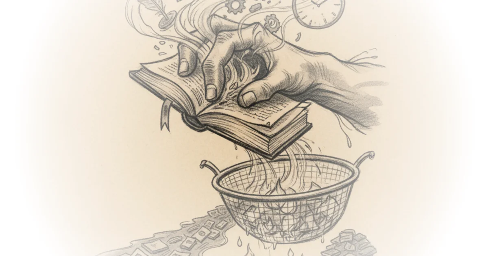

The Friendship that Changed English Poetry Close Reading Poetry · Close Reading Poetry ·Mar 16, 2026 · 21 min read · Writing & Craft
The Symbolic Imagination | Literature through The Major Arcana Close Reading Poetry · Close Reading Poetry ·Mar 11, 2026 · 20 min read · Foreign Policy
The Sublime Explained (from Longinus to Kant) Close Reading Poetry · Close Reading Poetry ·Mar 5, 2026 · 49 min read · Writing & Craft
How Poetry Becomes Music | "Burnt Norton" Eliot's Four Quartets Close Reading Poetry · Close Reading Poetry ·Mar 3, 2026 · 17 min read · Writing & Craft
How our creativity was stolen Close Reading Poetry · Close Reading Poetry ·Feb 25, 2026 · 17 min read · Writing & Craft 
The Deeper Crisis of Modernism Close Reading Poetry · Close Reading Poetry ·Feb 18, 2026 · 15 min read · Writing & Craft
The Hidden Structure of T.S. Eliot's Four Quartets Close Reading Poetry · Close Reading Poetry ·Feb 16, 2026 · 17 min read · Writing & Craft
My Harvard Dissertation | Spiritual Poetics Close Reading Poetry · Close Reading Poetry ·Feb 11, 2026 · 13 min read · Culture
Not Just a Cultural Decline Close Reading Poetry · Close Reading Poetry ·Feb 9, 2026 · 19 min read · Writing & Craft
William Blake Can Change Your Life | with Dr. Mark Vernon Close Reading Poetry · Close Reading Poetry ·Feb 6, 2026 · 38 min read · Culture
Basho and the Art of the Haiku | Lecture on Nature, Seasons, and Imagery | Close Reading Close Reading Poetry · Close Reading Poetry ·Feb 4, 2026 · 28 min read · Culture
The Iliad for Self-Learners Close Reading Poetry · Close Reading Poetry ·Jan 24, 2026 · 91 min read · Writing & Craft
William Blake on the Imagination Close Reading Poetry · Close Reading Poetry ·Jan 14, 2026 · 36 min read · Writing & Craft
7 Signs of the New Renaissance Close Reading Poetry · Close Reading Poetry ·Jan 5, 2026 · 23 min read · Writing & Craft
Sense & Sensibility | Chapter 1-6 Lecture | Austen, Free Indirect Discourse, the Dashwood Sisters Close Reading Poetry · Close Reading Poetry ·Dec 27, 2025 · 27 min read · Culture
The Complete English Reading List Close Reading Poetry · Close Reading Poetry ·Dec 16, 2025 · 108 min read · Writing & Craft
Jane Austen's Favorite Poets Close Reading Poetry · Close Reading Poetry ·Dec 9, 2025 · 18 min read · Writing & Craft
The Age of Closed Circles Close Reading Poetry · Close Reading Poetry ·Dec 5, 2025 · 14 min read · Writing & Craft
True Love in Chaucer's "The Franklin's Tale" Close Reading Poetry · Close Reading Poetry ·Nov 26, 2025 · 19 min read · Writing & Craft
William Blake and the Imagination | Interview with Mark Vernon Close Reading Poetry · Close Reading Poetry ·Nov 20, 2025 · 41 min read · Foreign Policy
The Decline of the English Department Close Reading Poetry · Close Reading Poetry ·Nov 13, 2025 · 15 min read · Writing & Craft
The Writer's Life | Lectures and Workshops by Śivani Howe Close Reading Poetry · Close Reading Poetry ·Nov 10, 2025 · 12 min read · Writing & Craft
How to find your voice as a poet Close Reading Poetry · Close Reading Poetry ·Nov 6, 2025 · 31 min read · Writing & Craft
Poetry as Spiritual Practice | Beyond "Analysis" Close Reading Poetry · Close Reading Poetry ·Nov 1, 2025 · 10 min read · Faith
The New Renaissance is Coming Close Reading Poetry · Close Reading Poetry ·Oct 22, 2025 · 14 min read · Writing & Craft
The Value of the Humanities and Literature Close Reading Poetry · Close Reading Poetry ·Aug 7, 2025 · 11 min read · Writing & Craft
How to Take Notes like a Literature PhD | from Commonplace Book to Encyclopedia Close Reading Poetry · Close Reading Poetry ·Jul 30, 2025 · 16 min read · Culture
AI and the Demise of College Writing Close Reading Poetry · Close Reading Poetry ·Jul 15, 2025 · 11 min read · Writing & Craft
What Auden's Students Read in 1941 Close Reading Poetry · Close Reading Poetry ·Jul 7, 2025 · 17 min read · Writing & Craft
Taylor Swift and the Lyric Tradition Close Reading Poetry · Close Reading Poetry ·Mar 8, 2024 · 33 min read · Writing & Craft